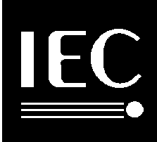

INTERNATIONAL
STANDARD
|
IEC
61690-1
|
|
First edition
2000-01
|
© IEC 2000 - Copyright -
all rights reserved
No part of this publication
may be reproduced or utilized in any form or by any means, electronic or
mechanical, including photocopying and microfilm, without permission in
writing from the publisher.
| International Electrotechnical Commission |
3, rue de Varembé Geneva, Switzerland
|
 |
Commission Electrotechnique Internationale
International Electrotechnical Commission
|
Reference number
IEC 61690-1:2000(E)
PRICE CODE XW
For price, see current catalogue
ICS 35.240.50 |
Numbering
As from 1 January 1997 all IEC
publications are issued with a designation in the 60000 series.
Consolidated publications
Consolidated versions of some
IEC publications including amendments are available. For example, edition
numbers 1.0, 1.1 and 1.2 refer, respectively, to the base publication,
the base publication incorporating amendment 1 and the base publication
incorporating amendments 1 and 2.
Validity of this publication
The technical content of IEC
publications is kept under constant review by the IEC, thus ensuring that
the content reflects current technology.
Information relating to the
date of the reconfirmation of the publication is available in the IEC catalogue.
Information on the subjects
under consideration and work in progress undertaken by the technical committee
which has prepared this publication, as well as the list of publications
issued, is to be found at the following IEC sources:
Terminology, graphical and letter
symbols
For general terminology, readers
are referred to IEC 60050: International Electrotechnical Vocabulary
(IEV).
For graphical symbols, and
letter symbols and signs approved by the IEC for general use, readers are
referred to publications IEC 60027: Letter symbols to be used in electrical
technology, IEC 60417: Graphical symbols for use on equipment. Index,
survey and compilation of the single sheets and IEC 60617: Graphical
symbols for diagrams.
INTERNATIONAL
ELECTROTECHNICAL COMMISSION
ELECTRONIC DESIGN INTERCHANGE
FORMAT (EDIF) –
Part 1: Version 3 0 0
FOREWORD
-
The IEC (International Electrotechnical
Commission) is a worldwide organization for standardization comprising
all national electrotechnical committees (IEC National Committees). The
object of the IEC is to promote international co-operation on all questions
concerning standardization in the electrical and electronic fields. To
this end and in addition to other activities, the IEC publishes International
Standards. Their preparation is entrusted to technical committees; any
IEC National Committee interested in the subject dealt with may participate
in this preparatory work. International, governmental and non-governmental
organizations liaising with the IEC also participate in this preparation.
The IEC collaborates closely with the International Organization for Standardization
(ISO) in accordance with conditions determined by agreement between the
two organizations.
-
The formal decisions or agreements
of the IEC on technical matters express, as nearly as possible, an international
consensus of opinion on the relevant subjects since each technical committee
has representation from all interested National Committees.
-
The documents produced have the
form of recommendations for international use and are published in the
form of standards, technical specifications, technical reports or guides
and they are accepted by the National Committees in that sense.
-
In order to promote international
unification, IEC National Committees undertake to apply IEC International
Standards transparently to the maximum extent possible in their national
and regional standards. Any divergence between the IEC Standard and the
corresponding national or regional standard shall be clearly indicated
in the latter.
-
The IEC provides no marking procedure
to indicate its approval and cannot be rendered responsible for any equipment
declared to be in conformity with one of its standards.
-
Attention is drawn to the possibility
that some of the elements of this International Standard may be the subject
of patent rights. The IEC shall not be held responsible for identifying
any or all such patent rights.
International Standard IEC 61690-1
has been prepared by subcommittee 93: Design automation.
This standard is based on
EIA-618-1993.
IEC 61690 consists of the
following parts, under the general title Electronic design interchange
format
-
Part 1:2000, Version 3 0 0
-
Part 2:2000, Version 4 0 0
This standard does not follow
the rules for the structure of international standards given in Part 3
of the ISO/IEC Directives.
The text of this standard
is based on the following documents:
| FDIS |
Report on voting |
| 93/75/FDIS |
93/78/RVD |
Full information on the voting
for the approval of this standard can be found in the report on voting
indicated in the above table.
The committee has decided
that the contents of this publication will remain unchanged until 2003-01.
At this date, the publication will be
-
reconfirmed;
-
withdrawn;
-
replaced by a revised edition,
or
-
amended.